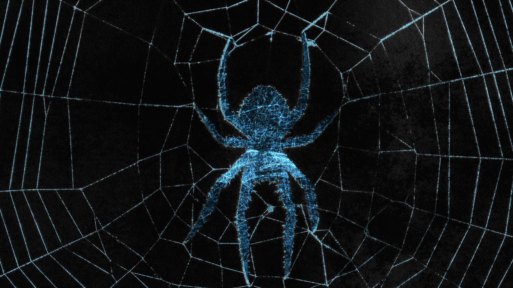

Through analysing the story "Office Of Climate Facts", I found that the emotion of being trapped and feeling hopeless was prevalent. For my motion concept, imagery of a spiders web and its threads was used to show a tone within the story of being stuck and tangled. The motion followed a thread throughout the frames and layers of thread were shown underneath the images.
